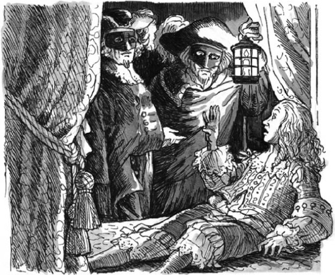

6
'Tôi là Vua của nước Pháp!'
Listen to Part 1:
'Tôi đang mơ sao?' Louis XIV tự hỏi.
Có hai người đàn ông lạ đứng cạnh giường của ông. Mỗi người đều đội một chiếc mặt nạ màu đen và choàng một chiếc áo choàng dài. Một người đàn ông cầm một chiếc đèn trong tay. Hai người nói chuyện thầm thì.

Nhà vua không hề mơ – ông đã tỉnh. Và ông đang gặp nguy hiểm! Ông nhảy phắt khỏi giường.
'Các người là ai?' ông hỏi người đàn ông cầm đèn. 'Các người có phải là đầy tớ của ngài Fouquet?'
'Điều đó không quan trọng,' người đàn ông cầm đèn đáp. 'Ông phải đi cùng chúng tôi!'
'Các người muốn gì?' Nhà vua hỏi.
'Ông sẽ sớm biết điều đó thôi,' người đàn ông thứ hai nói. Ông rất to cao và vạm vỡ.
Hai người đàn ông giữ chặt cánh tay Nhà vua và lôi ông đến một cánh cửa bí mật trên bức tường phòng ông. Sau đó, họ đẩy ông qua cánh cửa và xuống cầu thang đá. Nhà vua nhìn xung quanh và thấy những bức tường đá ướt đẫm. Họ đang ở dưới một con đường ngầm!
'Dừng lại!' Nhà vua nói. 'Ta sẽ không đi với các người! Ta là Vua của nước Pháp!'
Listen to Part 2:
'Nhà vua ư!' người đàn ông cầm đèn nói. 'Ngài nên quên chữ đó đi, thưa ngài!'
Sau đó, người đàn ông to lớn che miệng Nhà vua bằng một trong những bàn tay khổng lồ của mình. Ông giữ chặt cánh tay Louis bằng tay kia và đẩy ông đi dọc theo con đường ngầm. Cuối cùng, họ đến một cánh cửa nặng nề trên tường. Người đàn ông cầm đèn mở cánh cửa bằng một chiếc chìa khóa. Đột nhiên, họ thấy mình ở bên ngoài ngôi nhà.
Một cỗ xe ngựa đang đợi dưới tán cây.
Người đàn ông to lớn đẩy Nhà vua vào xe ngựa. Người đàn ông cầm đèn cũng leo lên xe ngựa. Sau đó, người đàn ông to lớn trèo lên ghế ngồi ở phía trước xe ngựa. Ông lặng lẽ lái xe rời khỏi Vaux.

Cỗ xe ngựa đến nhà tù Bastille vào khoảng ba giờ sáng.
Người đàn ông to lớn nói chuyện với những người lính canh ở cổng.
'Đánh thức ngài thống đốc!' ông ta ra lệnh.
Năm phút sau, ngài Baisemeaux ra cổng. Người đàn ông cầm đèn mở cửa xe ngựa. Ông nói nhanh với người đàn ông to lớn. Người đàn ông to lớn xuống khỏi ghế ngồi của người lái xe và chui vào trong xe ngựa. Ông ta chĩa súng vào đầu Nhà vua.
'Đừng nói. Tôi không muốn giết ông,' ông ta ra lệnh.
Listen to Part 3:
Người đàn ông cầm đèn tháo mặt nạ ra. Ông đi về phía ngài thống đốc.
'Giám mục!' ngài thống đốc thốt lên. 'Sao ngài lại ở đây?'
'Có một sự nhầm lẫn, thưa ngài Baisemeaux,' Aramis nói. 'Ngài đúng hai ngày trước. Mệnh lệnh đó là để thả Seldon, chứ không phải Marchiali. Tôi đã bắt Marchiali trở lại đây.' 'Tù nhân này không được phép nói chuyện với bất kỳ ai,' Aramis nói. 'Hắn ta bị điên. Khuôn mặt hắn giống hệt khuôn mặt của Nhà vua – ngài còn nhớ không, Baisemeaux. Bây giờ hắn nói với mọi người: “Ta là Vua của nước Pháp”. Hắn không được phép nói chuyện với ai – ngoài tôi, người bảo vệ của hắn và chính Nhà vua!'
Mười phút sau, Nhà vua của nước Pháp đã ngồi trong phòng giam của Philippe trong nhà tù.
Aramis và Porthos lái xe rời khỏi Bastille. Họ sớm đến Vaux.
Trong ngôi nhà lớn ở Vaux, D'Artagnan đang nói chuyện với Fouquet.
'Ngày mai, Nhà vua sẽ ra lệnh cho tôi bắt ông,' ông nói. 'Cho đến lúc đó, tôi phải giám sát ông, thưa ngài. Ông không được rời khỏi nhà.'
Mục lục
- Trang bìa
- Trang bản quyền
- Mục lục
- Ghi chú về tác giả
- Ghi chú về tác phẩm
- 1 Pháo đài Bastille, Paris
- 2 Người tù
- 3 Viện bảo tàng Louvre, Paris
- 4 ‘Con sẽ là một vị vua vĩ đại’
- 5 Ngôi nhà lớn ở Vaux
- 6 ‘Ta là vua của nước Pháp!’
- 7 Louis và Philippe
- 8 Fouquet khám phá ra bí ẩn
- 9 Âm mưu của đức giám mục
- 10 Các anh em
- 11 Cuộc gặp gỡ ở Nantes
- 12 Belle-Isle
- 13 Trốn thoát
- 14 Người lính ngự lâm cuối cùng